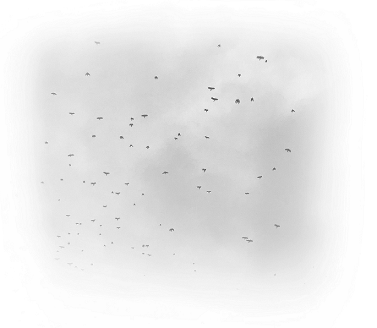
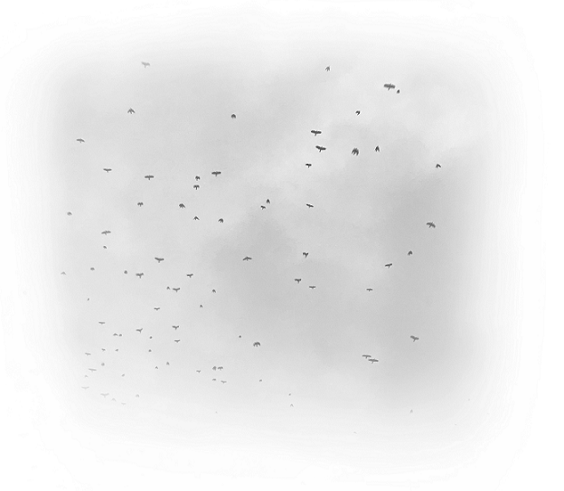

In my grief I ofen reminisced, and certain moments stuck with me in particular. There was the ski trip we took, back when I was still with Jonathan. She hated skiing but loved taking the ride up on the lift. I also found myself returning to a memory of us walking home from Target and seeing hundreds of birds migrating South. She just stared up at the sky, mouth agape, clutching a plastic bag of fruit snacks and Cliff bars.
 
